ACT 01 · A LIVING DESIGN RECORD
不是最后一张图的陈列，而是每次取舍怎样把网站推到现在。
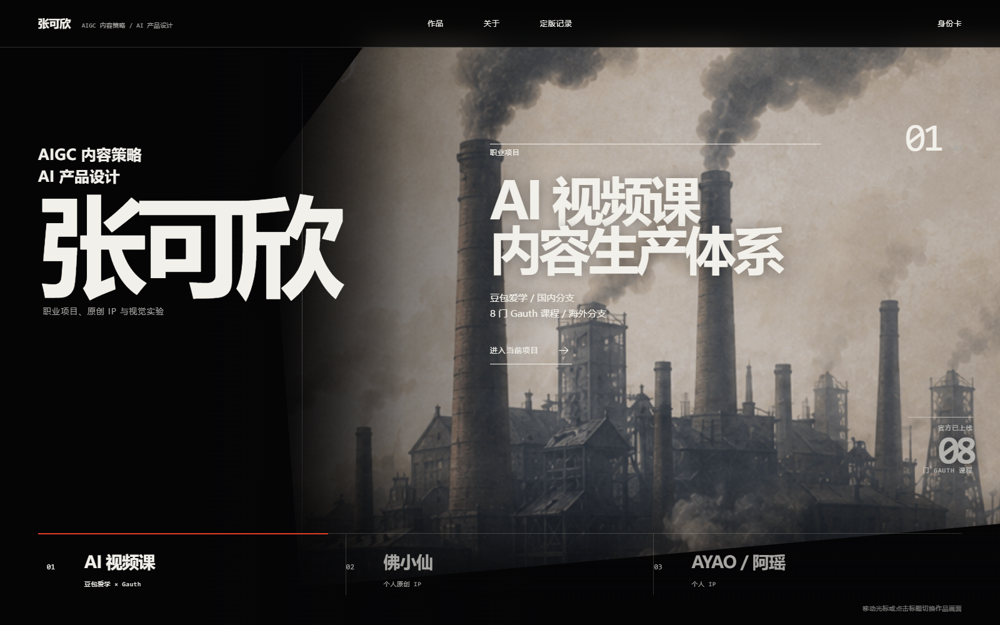
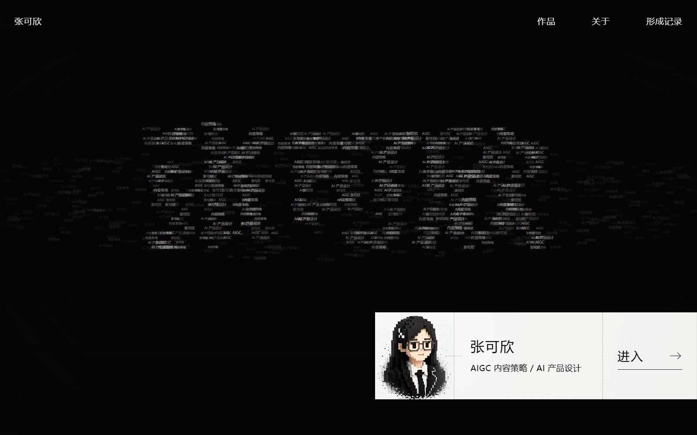
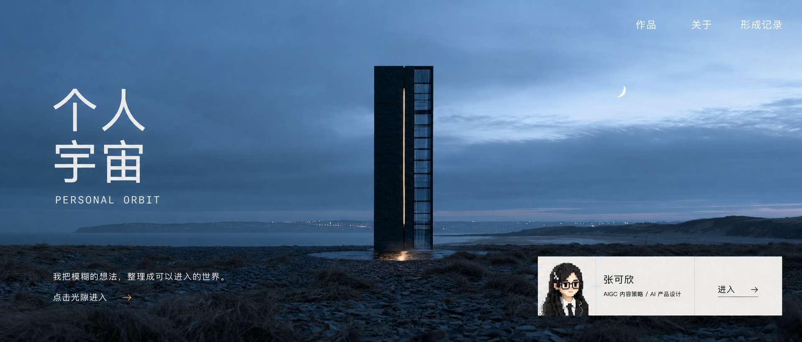
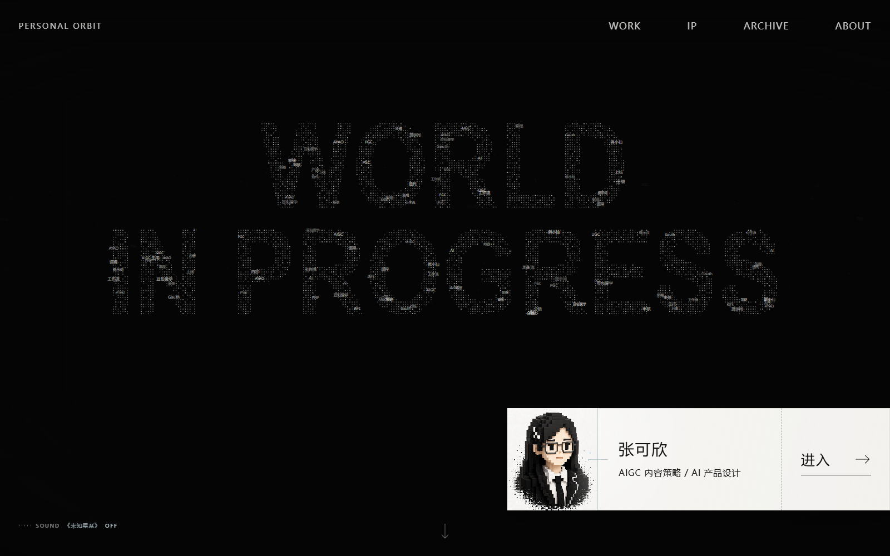
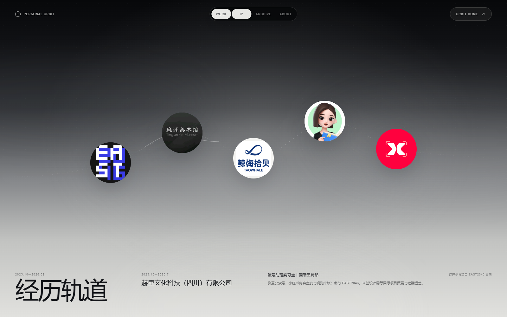
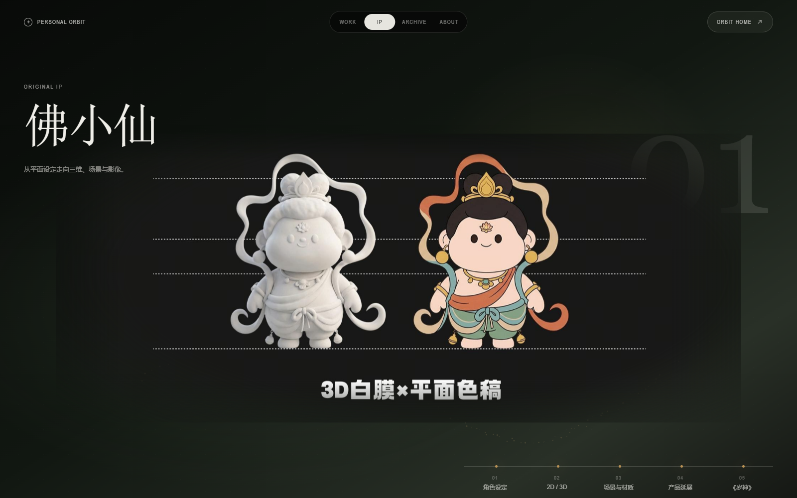
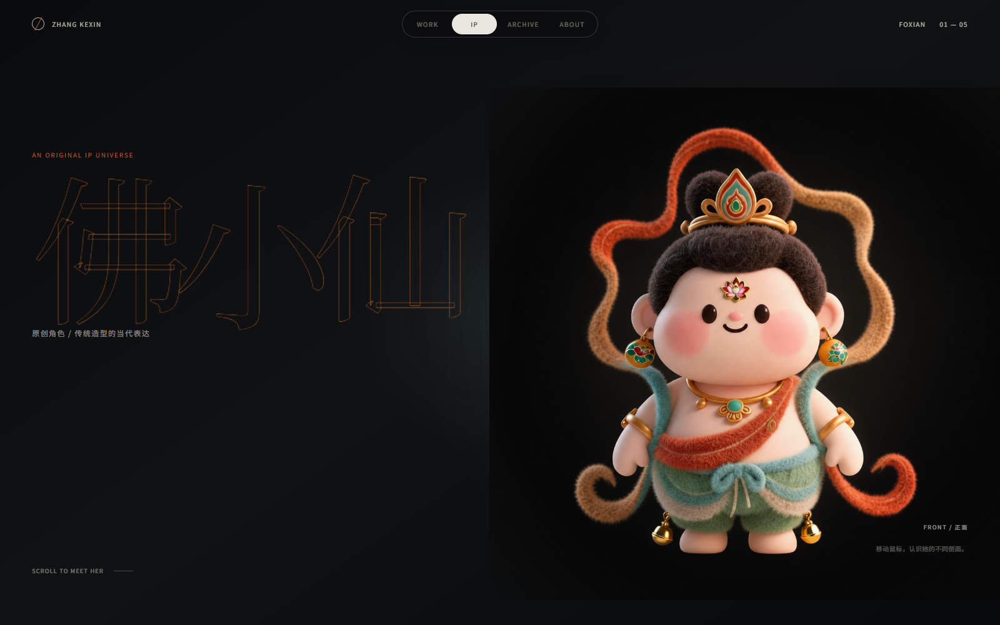
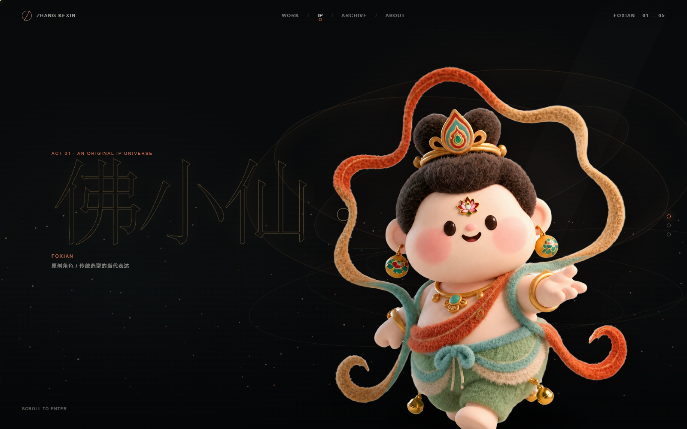
ACT 02 · MATERIAL INDEX
作品不是被塞进窗口里，而是作为画面、比例与节奏本身参与页面。滚轮会先翻动胶片；抵达首尾后，再继续浏览页面。
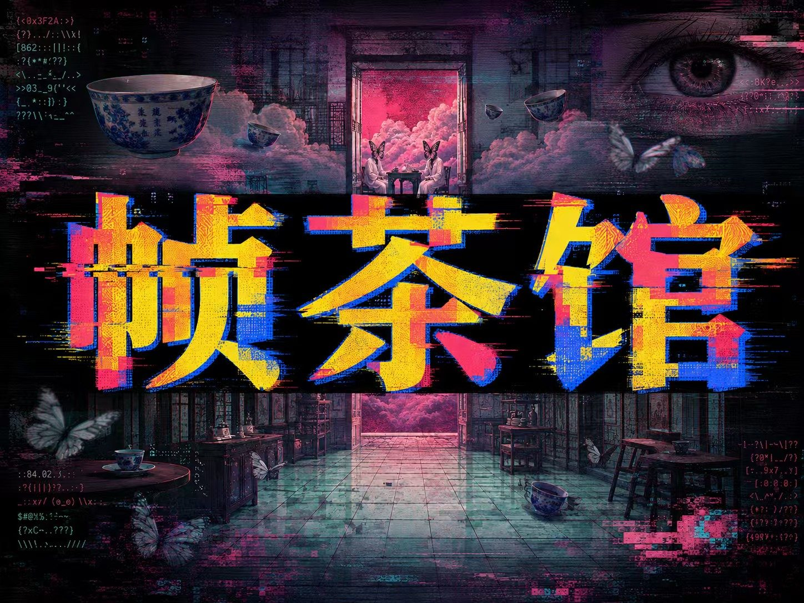
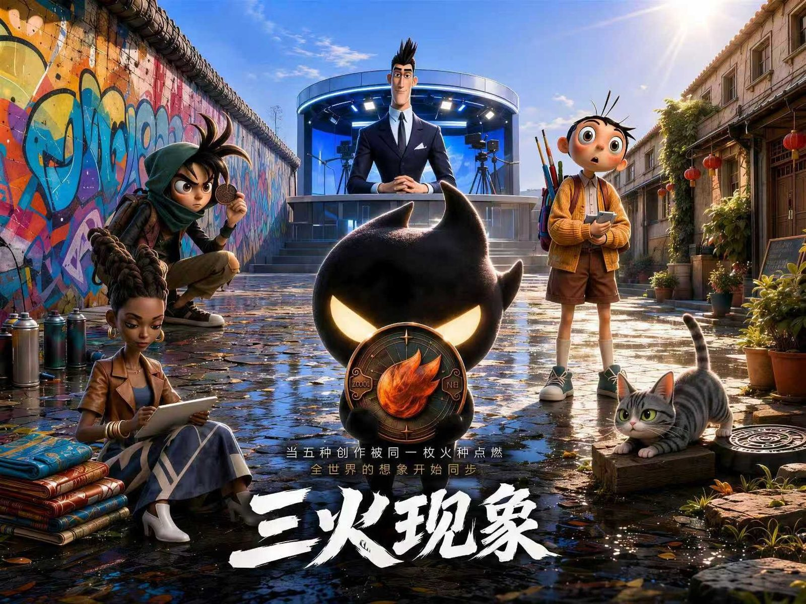
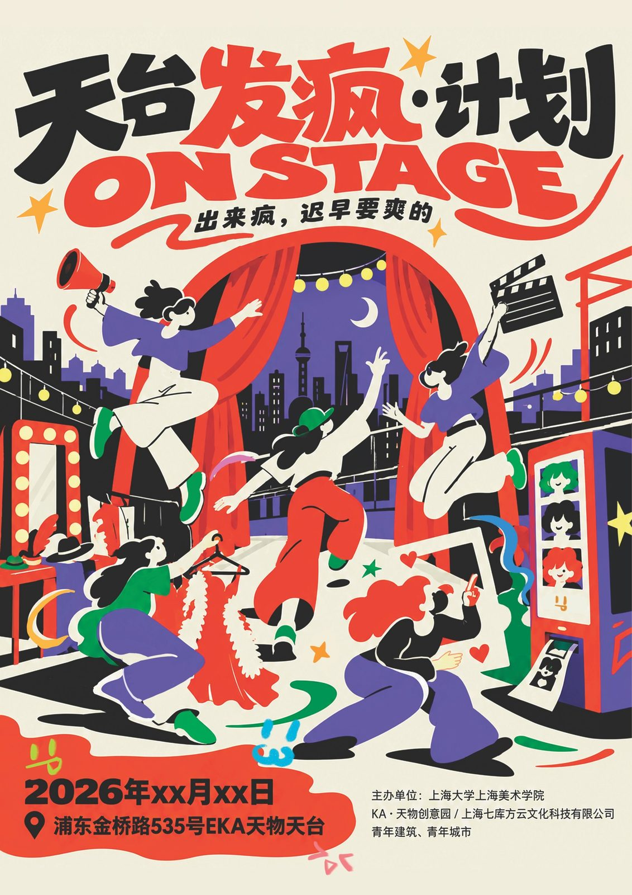
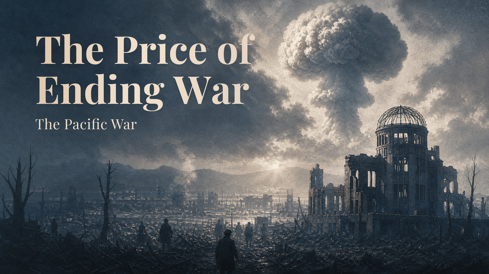
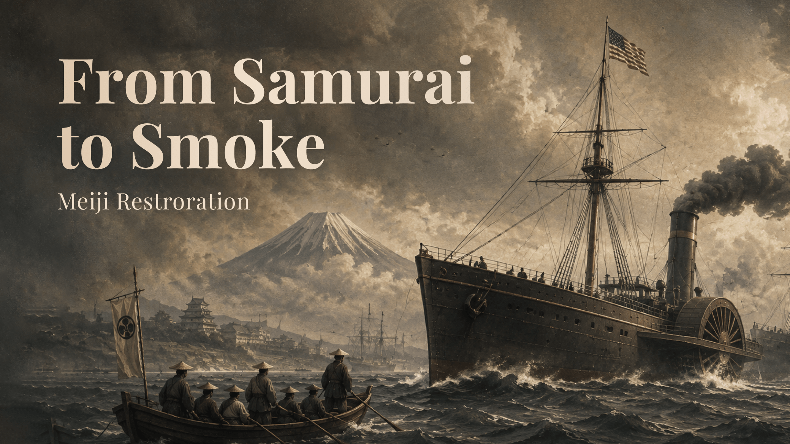
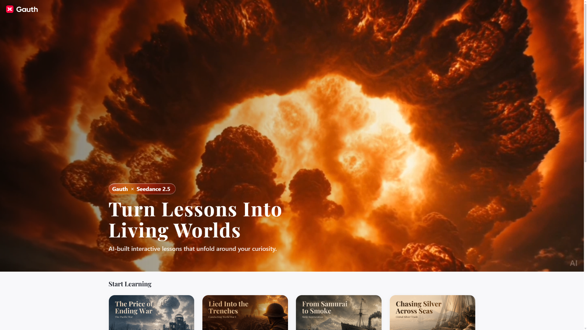
粒子承担气质，实体字承担阅读。
WORK / IP / ARCHIVE / ABOUT 保持克制。
取消一屏一页的硬切与卡片堆叠。
作品进入版式，不再作为网页窗口。
个人作品 · 视觉叙事
ACT 03 · DECISION LEDGER
用层次代替一麻黑。
悬停观察、点击换装、黑龙角响应。
页面之间共享材质、颜色与运动方向。
它压过内容，也削弱了粒子实验感。
统一形状，只让关键信息显眼。
画面成为网页构图的一部分。
NEXT · ABOUT
从版本档案继续前往创作者本人，查看经历、方法与持续运行的内容系统。
线稿与三维对应、角色坠落、粒子缝合，形成当前版。